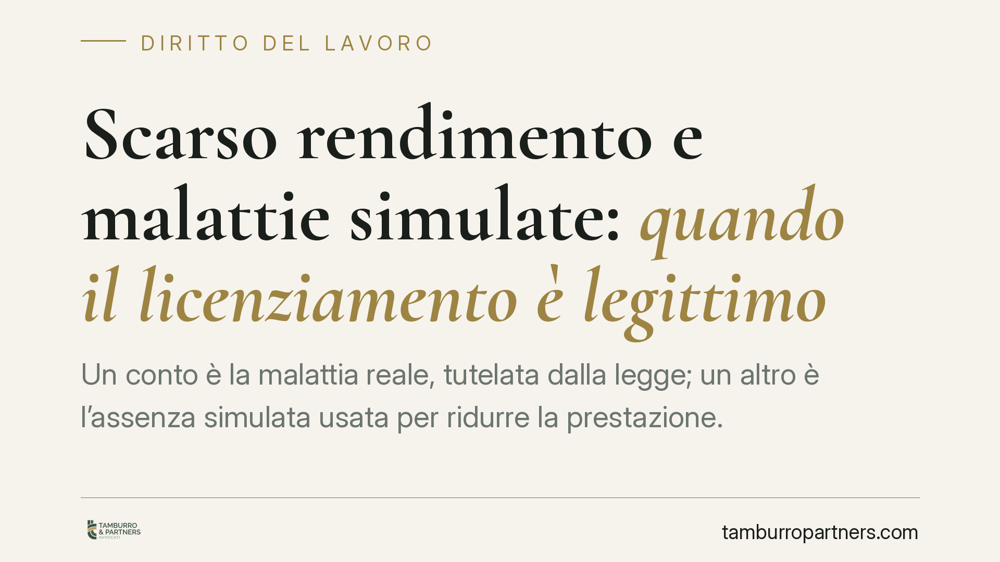

Scarso rendimento e malattie simulate: quando il licenziamento è legittimo
Un conto è la malattia reale, tutelata dalla legge; un altro è l'assenza simulata usata per ridurre la prestazione. Una recente pronuncia della Corte di Cassazione torna sul licenziamento per scarso rendimento legato a microassenteismo simulato, sottraendo questa ipotesi alla disciplina del comporto e riconoscendo che la simulazione può essere provata anche in via presuntiva. Un tema che tocca datori e lavoratori.

Il caso
La vicenda riguarda un autista del settore autoferrotranviario licenziato per scarso rendimento. Secondo il datore, le numerose assenze non derivavano da patologie effettive, ma da certificazioni di malattia utilizzate in modo strumentale, concentrate in prossimità di riposi e festività.
Una recente pronuncia della Corte di Cassazione ha confermato la legittimità del recesso, inquadrandolo come giustificato motivo soggettivo. Precisiamo che gli estremi completi della decisione (numero, anno e sezione) vanno verificati sulla fonte ufficiale prima di qualsiasi utilizzo in sede difensiva: qui ci limitiamo a illustrarne il principio.
Inquadramento normativo
Il punto di partenza è l'art. 2110 del Codice civile, che disciplina il cosiddetto comporto: il periodo durante il quale il lavoratore malato conserva il posto di lavoro. Finché l'assenza è sorretta da una malattia reale e documentata, il licenziamento è possibile solo al superamento di tale periodo.
La pronuncia opera però una distinzione netta. Quando le assenze non corrispondono a una patologia effettiva, ma sono simulate, non si applica la logica di tutela del comporto: si è di fronte a un inadempimento del dovere di diligenza. In questi casi il recesso può fondarsi sullo scarso rendimento che ne deriva, come giustificato motivo soggettivo.
Per il personale autoferrotranviario viene in rilievo anche l'art. 27 del R.D. 148/1931 (Allegato A), che disciplina i provvedimenti di recesso e le sanzioni per questa categoria. La riconducibilità del fatto a una specifica ipotesi di quel testo richiede una verifica puntuale caso per caso.
Va ricordato che i controlli sulle assenze per malattia incontrano precisi limiti. Lo Statuto dei lavoratori (L. 300/1970), agli artt. 2 e 5, circoscrive le verifiche datoriali e riserva l'accertamento sanitario dello stato di malattia ai medici dei servizi pubblici, oggi tramite le visite fiscali INPS. Il datore non può accertare direttamente la condizione clinica del dipendente.
La prova per presunzioni
Il profilo più delicato riguarda la dimostrazione della simulazione. La pronuncia conferma che non è necessario un accertamento sanitario diretto che smentisca ogni singolo certificato.
La simulazione può emergere in via presuntiva e indiziaria, da una serie di elementi concordanti: la ricorrenza anomala delle assenze, la loro sistematica collocazione a ridosso di giorni di riposo o festività, l'eventuale incoerenza tra la patologia dichiarata e i comportamenti osservati. Sono gli indizi, letti nel loro insieme, a fondare il convincimento del giudice.
Nessun automatismo
Resta un punto fermo: il numero elevato di assenze non equivale, di per sé, a simulazione. Un lavoratore può ammalarsi spesso senza alcuna strumentalizzazione. L'assenza frequente, da sola, conduce semmai alla disciplina del comporto, non al licenziamento disciplinare.
Serve un quadro indiziario specifico e coerente. Scambiare la mera frequenza delle assenze per prova della frode espone il datore al rischio concreto di un licenziamento illegittimo.
Implicazioni pratiche
Per il datore di lavoro, la decisione non apre una via rapida al licenziamento: richiede un'istruttoria accurata, documentata e rispettosa dei limiti di legge sui controlli. L'onere della prova resta a suo carico.
Per il lavoratore, emerge l'importanza della coerenza tra la condizione dichiarata e i comportamenti tenuti durante l'assenza, soprattutto laddove il quadro complessivo possa apparire sospetto.
Cosa fare in concreto
- Documentate nel tempo l'andamento delle assenze, registrando ricorrenze, collocazione rispetto a riposi e festività e ogni elemento oggettivo rilevante.
- Rispettate i limiti dell'art. 5 L. 300/1970 e affidate all'INPS gli accertamenti sanitari: non tentate verifiche cliniche dirette.
- Distinguete con rigore la situazione di comporto (malattia reale) dall'ipotesi di assenza simulata: sono percorsi disciplinari e normativi diversi.
- Costruite un quadro indiziario specifico prima di contestare: evitate automatismi fondati sul solo numero di assenze.
- Valutate tecnicamente il singolo caso prima di procedere, verificando anche la corretta applicazione della disciplina di categoria.
Disclaimer
Contributo informativo a cura di Tamburro & Partners - Avv. Giuseppe Tamburro. Non costituisce parere legale.
Ogni storia di lavoro ha i suoi tempi.
Se gestisci HR e vuoi un confronto su contenzioso, ispezioni o licenziamenti, scrivi allo studio. Ti rispondiamo entro un giorno lavorativo.